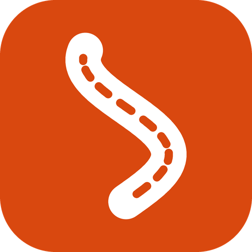

La app para rodar en ciudad, carretera y terracería: rutas con curvas, inclinación, detección de caídas, tu garaje y tu grupo de amigos.
Descargar para AndroidRápida, curvas, súper curvas, sin casetas o terracería. Paseo circular, gasolina y clima en el camino, mapa sin señal.
Cada curva, fuerza G, 0–100 y un coach que te dice dónde mejorar. El mapa de tu rodada pintado por inclinación.
Si te caes y no respondes en un minuto, avisa por SMS a tus contactos y a tu grupo con tu ubicación.
Ruta de la semana, ¿quién va?, chat, fotos de las rodadas y todos en el mapa en vivo.
Ficha de tu moto, mantenimiento con avisos, papeles, gasolina y bitácora con fotos. Historial en PDF para venderla.
Tu familia ve por dónde vas y a qué hora llegas, sin instalar nada.
1. Toca «Descargar para Android». 2. Abre el archivo y toca Instalar (si Android pregunta, permite «instalar apps desconocidas»). 3. Abre Rodada y sigue los pasos. La app se actualiza sola.
Aviso de privacidad y términos · Mapas © OpenStreetMap